State Farm B2B — Edge Delivery Services Documentation
A Document Authoring (DA)-backed Edge Delivery Services site for State Farm's B2B portal — claims, billing, supplier, and lender-facing service hub pages migrated from a legacy portal. Built on @adobe/aem-boilerplate, with fragment-based header/footer, a simulated login/auth-state system for gating "Login required" content, and a side-nav-driven detail/FAQ page pattern used across dozens of lender and EDI subpages.
main branch — dev happens on ticket branches merged via develop.
Preview
EDS preview
https://main--statefarm-b2b-eds--adobedrago.aem.page/b2b-content
Preview environment for main.
Live
EDS live
https://main--statefarm-b2b-eds--adobedrago.aem.live/b2b-content
Production live environment.
Purpose & requirements
Goals
- Migrate the legacy State Farm B2B portal to Edge Delivery Services, authored in Document Authoring.
- Support role-based service hub navigation — claims, billing/payments, medical e-billing, suppliers, other-carrier, and home/auto lender pages.
- Ship a simulated auth/login-state system (no live IdP) that gates "Login required" content and swaps CTAs by auth state.
Core engineering constraints
- Use the EDS block-based development model only (
scripts/aem.js+scripts/scripts.js). - Auto-block
a[href*="/fragments/"]anda[href*="/widgets/"]links rather than requiring authors to hand-author those blocks. - Enforce a strict CSP with Trusted Types, since
widget.jsinjects third-party HTML/CSS/JS via aninnerHTMLsink. - Single project, single locale — no multi-brand or locale routing (unlike other EDS pilots in this org).
Workstream status
| Workstream | Covers | Status | Detail |
|---|---|---|---|
| Navigation / Header | Nav/megamenu chrome parity with the production site | Journey detail | |
| Auth / Login Simulation | Simulated login state, gated content, login pill | Journey detail | |
| Service Hub Pages | Cards / cards-service hub pages across claims, billing, suppliers, lenders | Journey detail | |
| Select Service & Agreement | Service-selection hub and agreement subpage layout | Journey detail | |
| Detail & FAQ Pages | side-nav-driven lender, EDI, and operations detail/FAQ subpages under Home & Auto Lenders and Electronic Payments | Journey detail | |
| Testing (Playwright) | Automated homepage test coverage, wired into CI | Journey detail |
All six workstreams above are complete and shipped to production.
Repository
| GitHub repo | AdobeDrago/statefarm-b2b-eds · branch main |
| Branch flow | Ticket branches (drago-NN) → develop → main |
| Base | @adobe/aem-boilerplate — package.json name/version are still literally @adobe/aem-boilerplate v1.3.0 |
| Project type | doc (DA-backed) — previewOrg/previewSite = adobedrago/statefarm-b2b-eds (.migration/project.json) |
| Testing | Playwright e2e suite in e2e-tests/, wired into CI; see Testing journey |
| Guides | project-guides/ — admin, author, and developer PDF guides (see Key references) |
fstab.yaml in this repo, so the Document Authoring mount is only inferable from .migration/project.json, not directly confirmed. See the note in Key references.
Key references
Project environments
main branch.
Preview
EDS preview
https://main--statefarm-b2b-eds--adobedrago.aem.page/b2b-content
Preview environment for main.
Live
EDS live
https://main--statefarm-b2b-eds--adobedrago.aem.live/b2b-content
Production live environment.
DA
Document Authoring
https://da.live/#/adobedrago/statefarm-b2b-eds
DA Live content source.
Project guides (in-repo)
Install & run
-
Clone and installgit clone https://github.com/AdobeDrago/statefarm-b2b-eds.git cd statefarm-b2b-eds npm i
-
Run the AEM CLInpm install -g @adobe/aem-cli aem up
Starts the standard EDS local dev server at
http://localhost:3000, proxying content from the linked Document Authoring source.
Linting & CI
.github/workflows/main.yaml runs npm run lint, and .github/workflows/playwright.yml runs the full Playwright suite against main/master and uploads the HTML report as a build artifact. See the Testing journey.
Block loading & decoration flow
This project uses the standard stock aem-boilerplate three-phase loading pattern unchanged — loadEager → loadLazy → loadDelayed, driven by loadPage() in scripts/scripts.js. Unlike some other EDS pilots in this org, there is no custom per-project block-path routing (e.g. no blocks/statefarm/* override family) — every block lives directly under blocks/ and is resolved the default aem-boilerplate way.
Page decoration (scripts/scripts.js)
| Behavior | Trigger / detail |
|---|---|
| Trusted Types CSP policy | Strips <script> tags and iframe[srcdoc] from HTML sink content — required because widget.js assigns third-party markup via innerHTML under a strict-dynamic CSP. |
buildAutoBlocks(main) | Auto-loads a[href*="/fragments/"] links as fragments. |
buildWidgetAutoBlocks | Auto-converts a[href*="/widgets/"] links into widget blocks. |
buildSideNavAutoBlock | Detects a page opening with an h1 followed by a flat link list or a run of bold-link "menu heading" paragraphs, and auto-builds a side-nav block from it — the mechanism behind most Home & Auto Lenders detail/FAQ pages (see Detail & FAQ Pages journey). |
decorateAuthLinks / decorateAuthGate | From scripts/auth.js — wires the simulated login/auth-gating system into decorateMain. |
initAuthState() | Called first in loadEager, before decoration, to set the auth-anonymous / auth-authenticated body class. |
decorateDropdown(ul, placeholder) | Exported utility — converts an authored link list into a native <select> jump menu; reused by columns-promo and cards-service. |
Blocks
| Block | Purpose | JS decoration? |
|---|---|---|
| accordion | Presents grouped content as collapsible question/label + answer/body pairs using native <details>/<summary>, so long reference or FAQ content doesn't have to compete for space on the page. Not currently authored directly on any live b2b-content page — FAQ sections there render through the side-nav block's own FAQ grouping instead — but it's available for any page whose FAQ or reference content isn't laid out with side-nav. Value: accessible, no-JS-required expand/collapse via native disclosure semantics. | ✓ |
| breadcrumbs | Gives visitors a "where am I" trail back up the page hierarchy on deeper pages, converting an authored link list into a semantic <nav>/<ol> breadcrumb. The current page is rendered as plain text marked aria-current="page" rather than a repeated, non-functional link — small detail, but it keeps the trail both accurate and screen-reader-friendly. | ✓ |
| cards | The primary tile/grid layout for browsing available services or tools; used across all six service-hub landing pages (claims, billing/payments, medical e-billing, other-carrier, suppliers, home/auto lenders). Integrates with the simulated auth system to show a "Login required" lock badge on gated cards, so anonymous visitors can see what's available without being misled about what they can open. | ✓ |
| cards-service | A denser icon-plus-description variant of the card pattern, used on hub pages that need to list more service entries than the photo-led cards block comfortably fits above the fold. Also collapses a long nested link list into a dropdown when a single service entry has many sub-options, keeping the grid from sprawling. Registered as a cards variant in its metadata.json — check that file's reuseGuidance before reaching for it on a new page. | ✓ |
| columns | The general-purpose flexible N-column layout used wherever mixed text/image content needs simple side-by-side arrangement but doesn't call for a more specialized pattern; automatically flags image-only columns for full-bleed styling. | ✓ |
| columns-auth | An auth-aware variant of columns used specifically for login/logout controls — turns a "Log In" link into a styled pill button wired to the simulated login flow, and maps specific "no login required" links to icons so a visitor can tell at a glance what needs a login and what doesn't. This is the block at the center of the site's simulated Auth/Login Simulation journey. Registered as a columns variant in its metadata.json — check that file's reuseGuidance before reaching for it on a new page. | ✓ |
| columns-promo | The promotional/product-selector variant of columns used on the homepage and hub pages, converting an authored link list into a "Select a product" dropdown so a promo section can route to many products or services without crowding the layout with a long row of buttons. Registered as a columns variant in its metadata.json — check that file's reuseGuidance before reaching for it on a new page. | ✓ |
| footer | Renders the shared site footer, sourced from a single fragment (with a metadata override and fallback path), so every page gets the same legal/navigation footer content without any page having to author it itself. Split into a banner section and a main content section to match the production footer's visual layout. | ✓ |
| fragment | The core content-reuse mechanism underlying header, footer, and any other shared content on the site — fetches another page's content and rebases its relative media/links so it renders correctly wherever it's included. This is what lets shared chrome like header/footer be authored and updated in one place and reflected consistently everywhere. | ✓ |
| header | Builds the full site navigation/megamenu experience — desktop and mobile — present on every page; manages dropdown open/close behavior, collapses to a mobile nav at the 900px breakpoint, and integrates with the auth system to swap Log In/Log Out state and gate nav-level content. It's the block most directly responsible for site-wide navigation and for chrome parity with the production site (see the Navigation/Header journey). | ✓ |
| hero | The large banner/intro treatment at the top of a page — heading, intro copy, background imagery. Purely CSS-styled with no JS decoration needed, since its authored markup requires no structural transformation to render correctly. | ✗ |
| icon-text | A lightweight, repeatable icon-plus-short-text row used for feature/benefit lists or link rows that need a small icon next to a label — a simpler alternative to cards/cards-service when a full card treatment would be more visual weight than the content needs. | ✓ |
| side-nav | The primary layout for detail and FAQ subpages across the Home & Auto Lenders and Electronic Payments areas — dozens of pages are built on this one block, usually without any author hand-authoring it: buildSideNavAutoBlock detects a plain heading + link-menu content pattern and builds the block automatically. The block itself then upgrades labeled bullet rows into real tables and groups repeated headings into an FAQ accordion, plus a handful of page-specific special cases (lender relations, auto/fire operations). This auto-blocking approach is what let the migration ship a large volume of lender/EDI/ops subpages quickly and consistently (see the Detail & FAQ Pages journey). | ✓ |
| widget | The integration point for third-party and internal widget bundles — including the State Farm chat widget — referenced via /widgets/... links and auto-blocked into place. Loads the widget's CSS/JS under the site's Trusted Types CSP and guards against path traversal, so a widget can be dropped into a page by an author without a developer hand-wiring each integration. | ✓ |
Supporting modules
| Module | Purpose |
|---|---|
| scripts/aem.js | Core AEM Edge Delivery library (page decoration primitives) — never modified per project convention. |
| scripts/scripts.js | Global decoration entry point — three-phase loading, auto-blocking, decorateDropdown export, Trusted Types CSP setup (see Page decoration). |
| scripts/auth.js | Simulated login/auth-state system — not present in stock aem-boilerplate; drives auth-anonymous/auth-authenticated body classes and gated content across cards, cards-service, columns-auth, and header. |
| scripts/delayed.js | Loads the State Farm chat widget (sf-chat custom element) after the lazy phase; forces its external=true asset flag on non-production hosts (localhost, aem.page/aem.live) since the widget's default asset host is unreachable there. |
Lighthouse comparison — Live vs EDS
Chrome DevTools Lighthouse audits across four representative /b2b-content pages, captured against the production live site (b2b.statefarm.com) and the EDS preview (develop--statefarm-b2b-eds--adobedrago.aem.page).
Homepage
| Metric | Live | EDS | Delta |
|---|---|---|---|
| Performance | 53 | 100 | +47 |
| Accessibility | 95 | 90 | −5 |
| Best Practices | 73 | 96 | +23 |
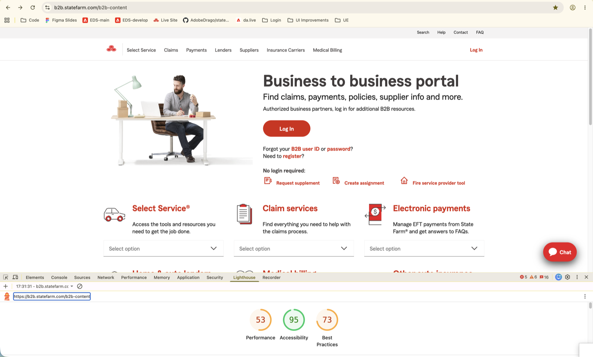
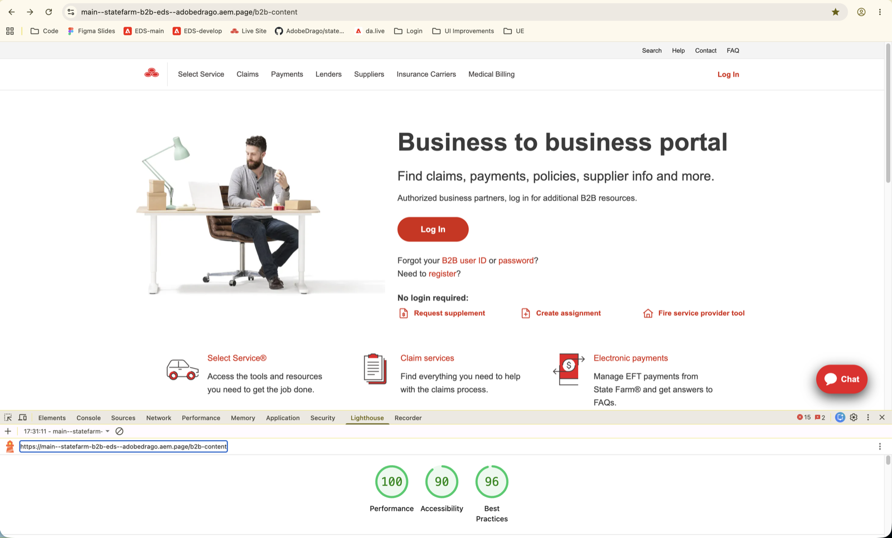
Select Service
| Metric | Live | EDS | Delta |
|---|---|---|---|
| Performance | 57 | 100 | +43 |
| Accessibility | 99 | 99 | 0 |
| Best Practices | 73 | 96 | +23 |
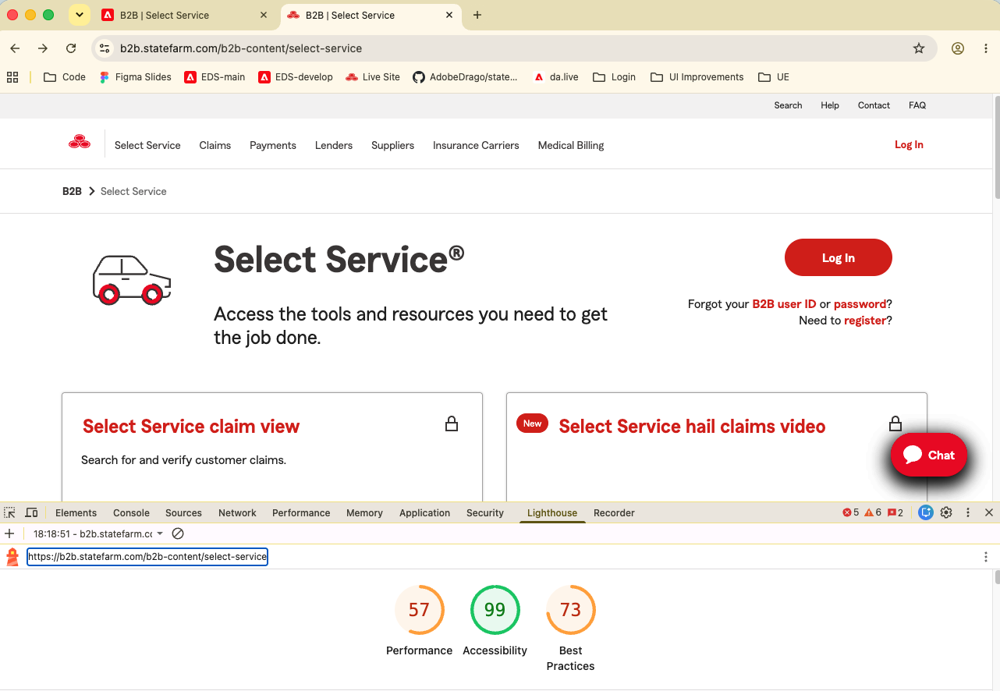
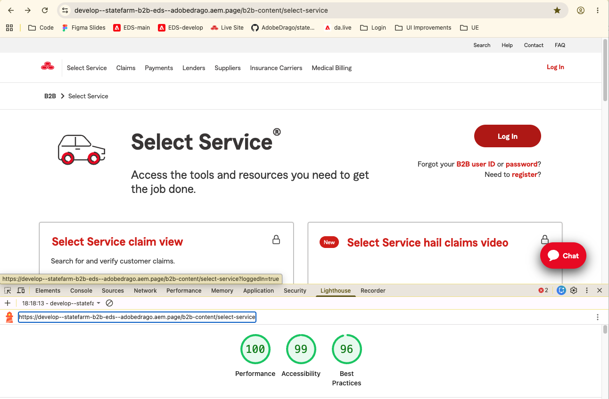
Create Assignment
| Metric | Live | EDS | Delta |
|---|---|---|---|
| Performance | 77 | 99 | +22 |
| Accessibility | 98 | 98 | 0 |
| Best Practices | 73 | 96 | +23 |
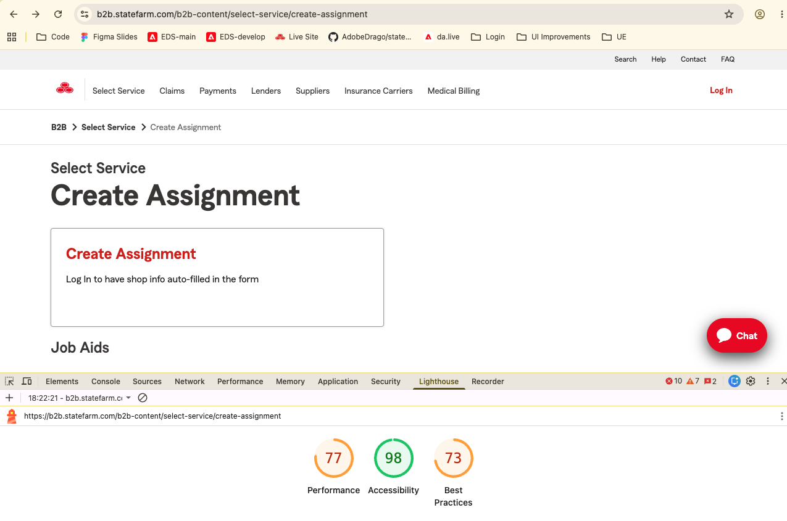
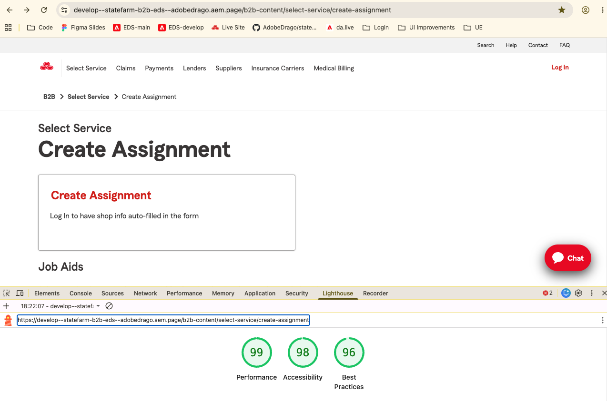
Suppliers
| Metric | Live | EDS | Delta |
|---|---|---|---|
| Performance | 71 | 99 | +28 |
| Accessibility | 98 | 100 | +2 |
| Best Practices | 73 | 96 | +23 |
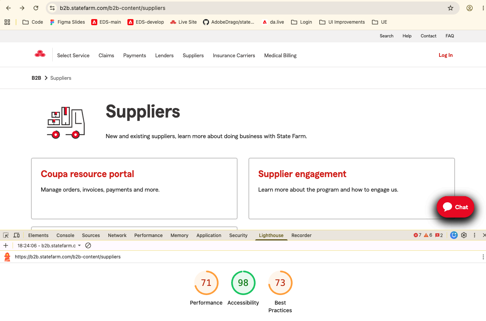
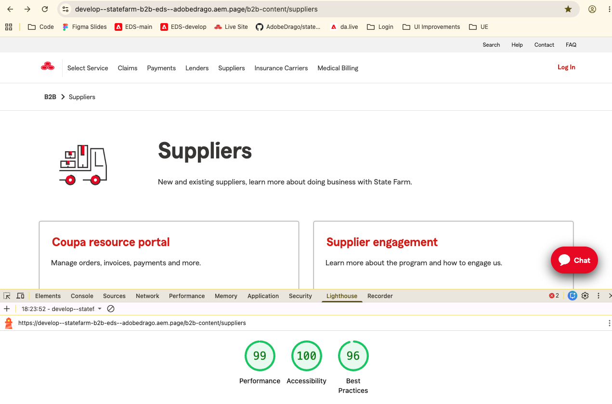
Journey — Auth / Login Simulation Complete
The production B2B portal gates a meaningful share of its content behind a real login, but this migration has no live identity provider to integrate against yet. scripts/auth.js solves that by simulating login state entirely client-side — a URL parameter (?loggedIn=true) flips an auth-anonymous/auth-authenticated body class that CSS and block JS key off of to show or hide gated content, swap CTAs, and toggle the nav's Log In/Log Out state. That lets authors and reviewers validate the entire gated-content experience — locked cards, "Login required" placeholders, "no login required" exceptions — end-to-end today, without waiting on real IdP integration to land.
-
Simulated auth-state module shipped
scripts/auth.jssetsauth-anonymous/auth-authenticatedbody classes and gates content. -
Login pill in columns-auth"Log In" link styled as a red pill button, wired to click-to-simulate-login.
-
"No login required" icon correctionsIcon mapping fixed for Request supplement, Create assignment, and Fire service provider tool links.
B2B homepage — anonymous vs. simulated login
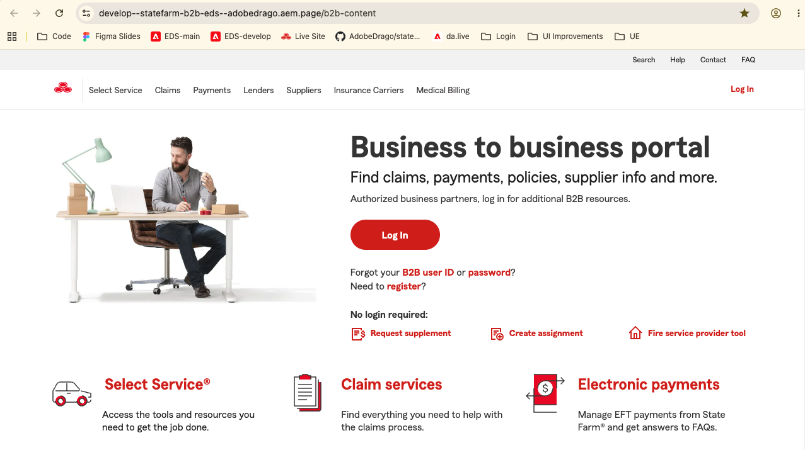
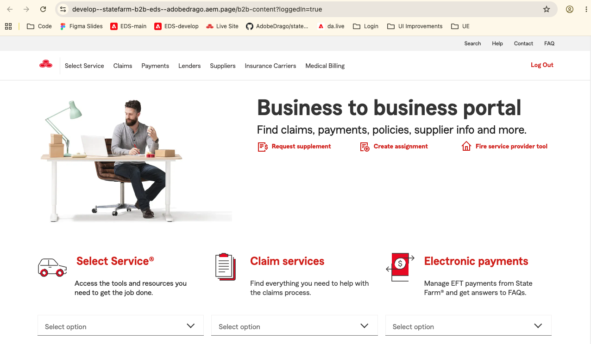
?loggedIn=true)Premier Service Program — gated content vs. simulated login
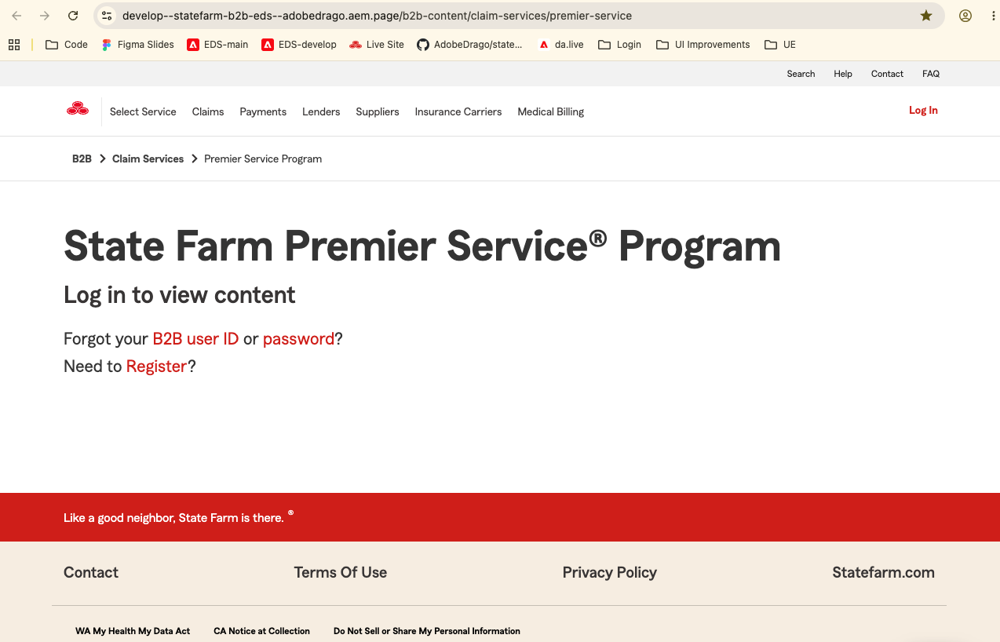
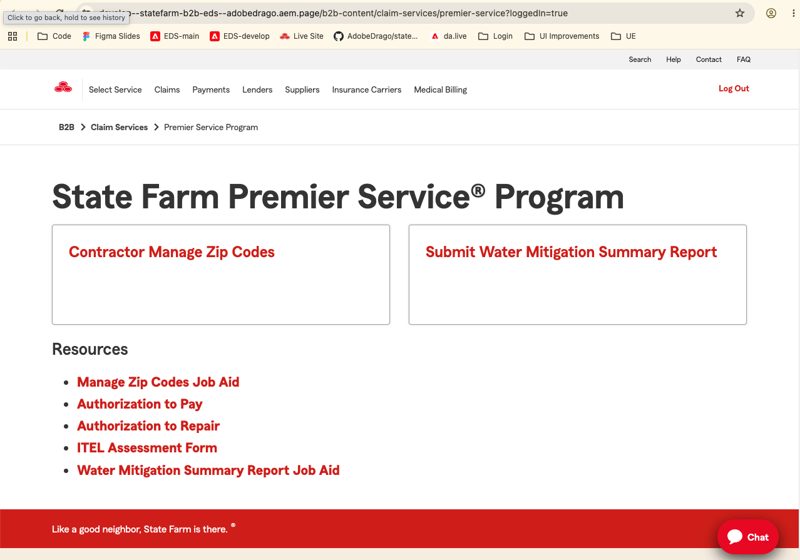
?loggedIn=true)Journey — Service Hub Pages Complete
Every service line in the B2B portal — claims, billing/payments, medical e-billing, other-carrier, suppliers, and home/auto lenders — needs a landing hub that lists its available tools and routes users into them, gated by login state where relevant. Rather than one-off layouts per service line, all six hubs share the same cards + columns-auth content model, so a single, well-tested pattern covers the whole portal. That gives authors a consistent, predictable structure to work in and keeps the six hubs visually and behaviorally in sync as they evolve.
-
Hub content model shippedCards + columns-auth pattern in place across all six service hub pages.
-
Visual polish completeCard/service-list height and padding adjustments finished across all six hub pages.
Journey — Select Service & Agreement Complete
The select-service hub and its ss-agreement subpage form a short transactional flow — a user picks a service, then completes an assignment/agreement step — rather than a purely informational page. Because a user is actively acting on the page (selecting, submitting) instead of just reading, layout and alignment fidelity mattered more here than on a typical content page: a misaligned control or broken column layout directly blocks the task instead of just looking off. This journey closed out that alignment work across both the hub and the agreement subpage.
-
Select-service hub built
columnscontent layout added on top of the standard cards + columns-auth pattern. -
Agreement subpage alignment fixed"Create assignment" layout and
ss-agreementalignment issues resolved.
Journey — Detail & FAQ Pages (side-nav) Complete
The legacy portal's lender, EDI, and operations content lives across dozens of individual detail and FAQ subpages — far too many to justify a bespoke layout, or even a hand-authored block, per page. The key implementation detail here is buildSideNavAutoBlock: it recognizes a page that opens with an h1 followed by a flat link list or a run of bold-link "menu heading" paragraphs, and automatically assembles a side-nav block from that plain content — no author has to insert or configure a block themselves. That auto-blocking approach is what let this many subpages ship quickly and consistently: authors write plain menu-style content, and the side-nav layout, generated tables, and FAQ accordions follow automatically. Subpages covered include home-auto-lenders/edi-transactions (mortgage-record-chg, daily-811-notifications, auto811files, edi-faq), home-auto-lenders/help-support (auto-ops/auto-ops-faq, fire-ops/fire-ops-faq, lender-relations), home-auto-lenders/ins-inquiry (nine subpages), and home-auto-lenders/mbps (its step subpages), plus the Electronic Payments eft-remit-faq — the page whose FAQ content first called for the standalone accordion block.
-
side-navblock + auto-blocking shippedTable generation from labelled bullet rows, FAQ-accordion grouping fromh3runs, and per-page special cases (lender relations, auto/fire operations) all live inblocks/side-nav/side-nav.js. -
EDI transactions & insurance inquiry subpages builtMortgage Billing & Payment, Mortgage Record Change, Daily EDI notifications, Auto EDI notifications, and the EDI FAQ page are all live on the side-nav pattern, covering the full EDI-transactions and insurance-inquiry content areas.
Journey — Testing (Playwright) Complete
Migrating a page from the legacy portal to an EDS block means re-expressing hand-coded markup and behavior as authored content plus block JavaScript — nav rendering, mega-menu interaction, and the simulated auth-gating all get rebuilt on a different foundation. That re-implementation is exactly the kind of change that can look right on a quick glance and still be silently broken: a missing href, a mega-menu that no longer closes on Escape, a card that stops respecting login state. Automated Playwright tests exist to catch that class of problem mechanically, on every change, instead of relying on someone remembering to click through the page by hand.
Why automated testing matters for this migration
- Validates the migrated page against real behavior — each test drives the actual rendered DOM (headings, hrefs, ARIA state) rather than trusting that authored content produced the intended output, so the suite verifies the migration, not just the intent behind it.
- Ensures UI and functional consistency — the same assertions run across desktop, mobile (390×844), and tablet (768×1024) viewports and across three browser engines (Chromium, Firefox, WebKit), so layout and interaction parity is checked everywhere the page is actually viewed, not just in one browser at one size.
- Detects regressions before they reach production — because the suite runs in CI on every push and pull request, a change to a shared block, script, or style that breaks the homepage's nav, cards, or login flow is caught at PR time, before it merges to
main. - Builds confidence for future changes — with a repeatable, automated baseline in place, subsequent content and block work (new hub pages, side-nav additions, styling passes) can move faster because there's a fast way to confirm nothing already-working got broken along the way, directly supporting the overall quality bar for the EDS migration.
Running the suite
-
Start the local dev server
The suite's
baseURLishttp://localhost:3000(set inplaywright.config.js), and Playwright does not start this server itself — leave it running in its own terminal before invoking any test command (see Install & run).aem up -
Install browser binaries (first run only)
The suite drives real Chromium, Firefox, and WebKit engines, so Playwright needs to download its own browser binaries the first time it runs on a machine —
npm ialone doesn't do this.npx playwright install -
Run the full suitenpm run test:e2e # headless — all 14 test cases × 3 browser engines npm run test:e2e:ui # interactive UI mode — step through each test and inspect actions live
-
Run a specific test case or subset
Every test title starts with its ID (e.g.
TC03 - Verify Log In button is displayed), and the mobile/tablet cases sit in their owntest.describegroups — both are matchable with Playwright's--grepfilter:npx playwright test --grep "TC03" # a single test case by ID npx playwright test --grep "tablet" # a whole group, e.g. all tablet-viewport tests npx playwright test --project=chromium # restrict to one browser engine npx playwright test --headed # watch the browser while the test runs -
Review the results
A failure prints inline in the terminal with the failing assertion. The configured HTML reporter also writes a full report — including a trace for any test retried after failing — to
playwright-report/:npx playwright show-report # opens the latest HTML report in a browserIn CI, that same report is uploaded as a build artifact on every push/PR run (see Linting & CI) — download it from the workflow run's Artifacts section to inspect a failure that only reproduced in CI.
Test cases — e2e-tests/homePage.spec.js (14)
| ID | Verifies | Viewport |
|---|---|---|
| TC01 | Page loads at /b2b-content with the correct title | Desktop |
| TC02 | Hero heading and intro copy are displayed | Desktop |
| TC03 | Log In button is displayed in the header | Desktop |
| TC04 | "No login required" heading and its 3 links (name + href) are displayed | Desktop |
| TC05 | All 7 main navigation items are displayed | Desktop |
| TC06 | All 8 service cards render with the correct heading and href | Desktop |
| TC07 | Promotional section and its "Car insurance" dropdown option render | Desktop |
| TC08 | Hovering a nav item opens its mega-menu panel with the correct title and links | Desktop |
| TC09 | Mega-menu closes on Escape | Desktop |
| TC10 | Simulated login updates the header to "Log Out" and hides anonymous-only content | Desktop |
| TC11 | Simulated logout reverts the header and URL to the anonymous state | Desktop |
| TC12 | Hamburger button toggles the mobile nav (aria-expanded) | Mobile 390×844 |
| TC13 | Hamburger button toggles the tablet nav (aria-expanded) | Tablet 768×1024 |
| TC14 | Hero heading and all 8 service cards render correctly at the tablet breakpoint | Tablet 768×1024 |
-
Homepage e2e suite merged14 test cases across three
test.describeblocks — desktop content/nav/cards + mega-menu + login-state (TC01–TC11), mobile hamburger at 390×844 (TC12), and tablet hamburger + breakpoint content at 768×1024 (TC13–TC14). -
Suite configuration
playwright.config.js—baseURL: http://localhost:3000, runs fully parallel across three projects (chromium/firefox/webkit, Desktop device profiles), HTML reporter, trace on first retry; CI runs withretries: 2andworkers: 1. -
CI test step wired up
.github/workflows/playwright.ymlruns the full suite on every push/PR tomain/masterand uploads the HTML report as a build artifact.